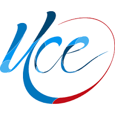

<!doctype html><html lang="en"><head><meta charset="utf-8"><title>MUCE</title><base href="/"><meta name="viewport" content="width=device-width,initial-scale=1"><link rel="icon" type="image/x-icon" href="favicon.ico"><link href="https://fonts.googleapis.com/css?family=Open+Sans:400,600,800" rel="stylesheet"><link href="styles.509a03b6e987ee7caf61.bundle.css" rel="stylesheet"/></head><body><app-root></app-root><script type="text/javascript" src="inline.2bf02d2e266ad39af5ef.bundle.js"></script><script type="text/javascript" src="polyfills.f7d9e7e7ff79186a9ce5.bundle.js"></script><script type="text/javascript" src="scripts.b9fd988f4865f42ee28c.bundle.js"></script><script type="text/javascript" src="vendor.cc81c191a7f1f43bdae9.bundle.js"></script><script type="text/javascript" src="main.3343efc2c82f1ca17be4.bundle.js"></script></body><div class="footer"><p style="padding: 0">© Derechos Reservados 2018-2018 Universidad Central del Ecuador Derechos de Contenido Reservados. </p></div></html>